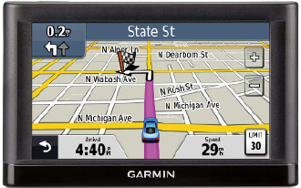

Diversos problemas podem ser modelados por meio da teoria de grafos. Alguns presentes até no nosso dia a dia, tais como:
GPS
Um GPS, sistema de posicionamento global utiliza Teoria de Grafos em sua modelagem.
Suponha que você deseje implementar em um programa de GPS uma
funcionalidade de cálculo da melhor rota entre dois pontos, de modo a
minimizar o tempo de viagem. Como calcular a rota com o menor tempo?

Um GPS, sistema de posicionamento global.
Solução
- Atribui um vértice a cada cruzamento;
- Atribui uma aresta a cada trecho de rua;
- Cada aresta deve receber um peso, que pode ser o tempo para percorre-lo ou seu comprimento.
Xadrez
Jogadas de xadrez podem ser modeladas usando grafos, como por exemplo Em um tabuleiro 3 x 3 onde se deseja mapear todos
os movimentos que podem
ser realizados por um bispo
que se move nas casas
brancas.

 Modelagem de uma jogada usando teoria dos Grafos.
Fluxo Máximo
Você esta planejando uma rede de galerias subterrâneas para
captação de agua da chuva, evitando alagamentos. Como calcular
o fluxo máximo de água que a rede de galerias é capaz de escoar?
Esse problema pode ser modelado utilizando Grafos.
Modelagem de uma jogada usando teoria dos Grafos.
Fluxo Máximo
Você esta planejando uma rede de galerias subterrâneas para
captação de agua da chuva, evitando alagamentos. Como calcular
o fluxo máximo de água que a rede de galerias é capaz de escoar?
Esse problema pode ser modelado utilizando Grafos.